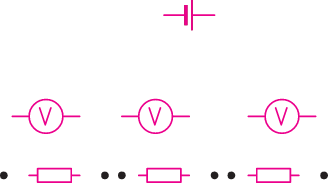

Equivalent resistors
Depending on the purpose, fixed resistors can be connected in either a parallel or a series configuration. The resultant resistance in the circuit is called total resistance, effective resistance, or equivalent resistance.
Resistors in series
When two or more resistors are connected end to end consecutively, and the same current flows through each resistor, such a connection is said to be a series connection. A single-loop circuit with series combination of resistors and a battery, is shown in Figure 2.9.

The current flowing in the circuit is the same at all points. The sum of the potential difference across all the resistors equals the potential difference across the battery.
Therefore,
From Ohm’s law, the current, , in the circuit is given by,
where is the total resistance, thus,
When resistors are connected in series, the total resistance in the circuit is the sum of the individual resistances. Therefore, for resistors connected in series, the total resistance is given by,
Note that when resistors are identical, the total resistance is given by , where is the resistance of an individual resistor and is the number of identical resistors.
Resistors in parallel
Resistors are said to be in parallel connection when two or more resistors are placed side by side with their corresponding ends joined together, such that the same p.d is applied to each resistor. Figure 2.10 shows a circuit with parallel connection of resistors and a battery.